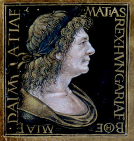

I. Mátyás (születési nevén Hunyadi Mátyás, elterjedt nevén Mátyás király, Kolozsvár, 1443. február 23. – Bécs, 1490. április 6.) Magyarország és Horvátország királya 1458-tól, cseh király 1469-től, Ausztria uralkodó főhercege 1486-tól haláláig.
Mátyásnak, aki nem örökösödési jogon került trónra, különösen nagy szüksége lehetett a szabályszerű koronázásra legitimációja, társadalmi elfogadottsága megerősítése érdekében. Ennek ellenére csak a korona visszaszerzése után háromnegyed évvel, 1464. március 29-én kerített sort erre Székesfehérvárott. Egyúttal országgyűlést is hirdetett a koronázóvárosba. Bonfini így írt a korona megérkezéséről: „A követek közhírré teszik s szerte kihirdetik, hogy mindazoknak, akik a most visszaszerzett szent korona iránt áhítattal és tisztelettel viseltetnek, Sopronban három napon át nyílt alkalom adatik arra, hogy lássák és felismerjék. A szomszédos városokból és falvakból megszámlálhatatlan sokaság hömpölygött áhítatos szeretettel; megnézte, felismerte és mélységes tisztelettel hódolt előtte. Azután Budára vitték s a várban helyezték el.”
1490. április 6-án hunyt el Bécsben, 50 (vagy 47) esztendős korában Mátyás magyar király, aki birodalma építése során az osztrák hercegi és cseh királyi címet is megszerezte.